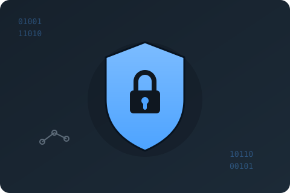

July 2026
Password Vault
A client-server password management application built to fight common password vulnerabilities. The server handles multiple concurrent clients, validates new passwords against a breached-password REST API, hashes and encrypts stored credentials, and generates strong passwords. The command-line client supports registration, login with auto-logout after inactivity, and adding, retrieving and removing passwords securely.